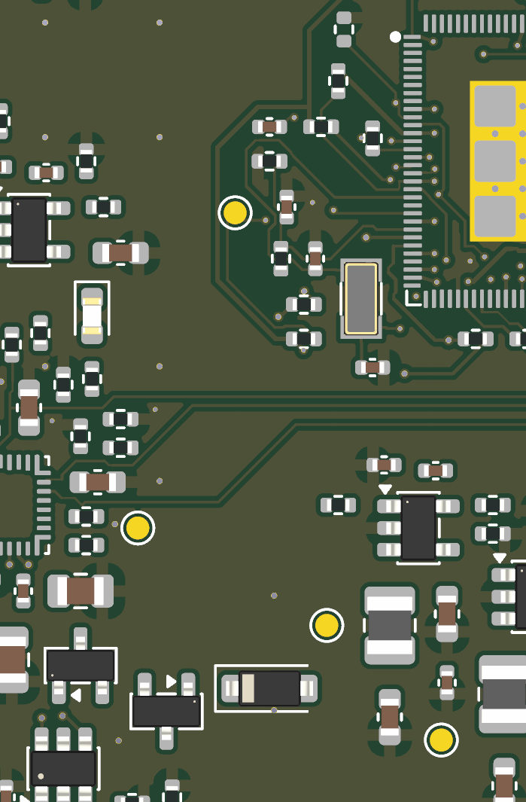
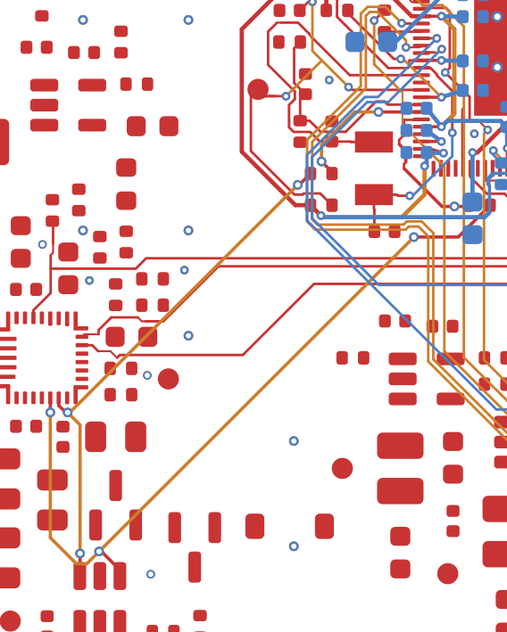
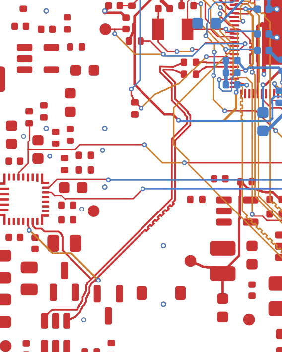
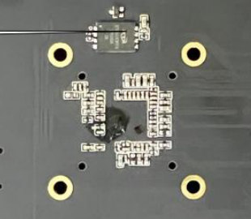
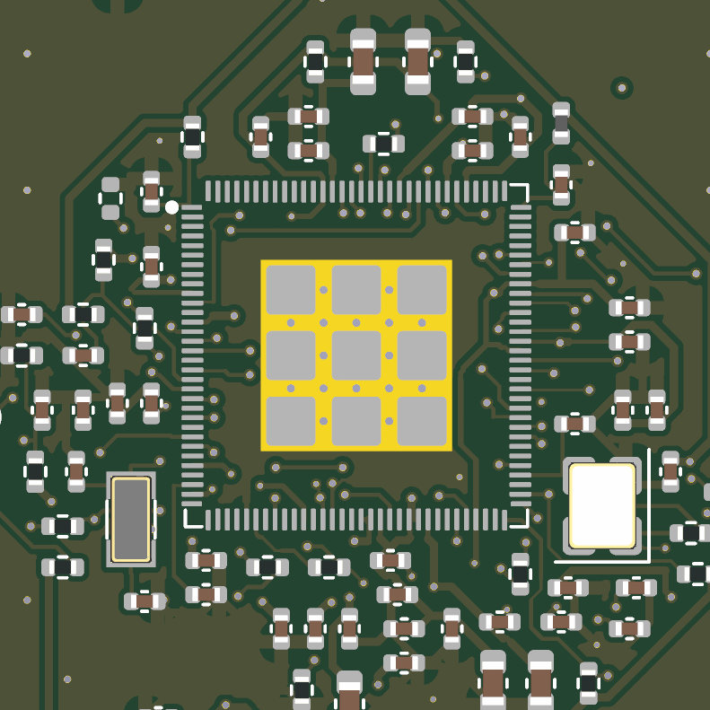
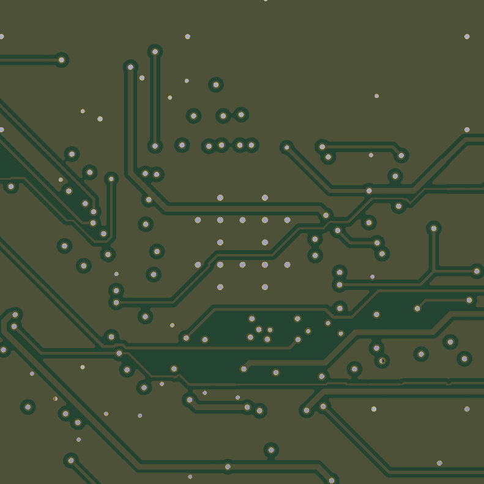
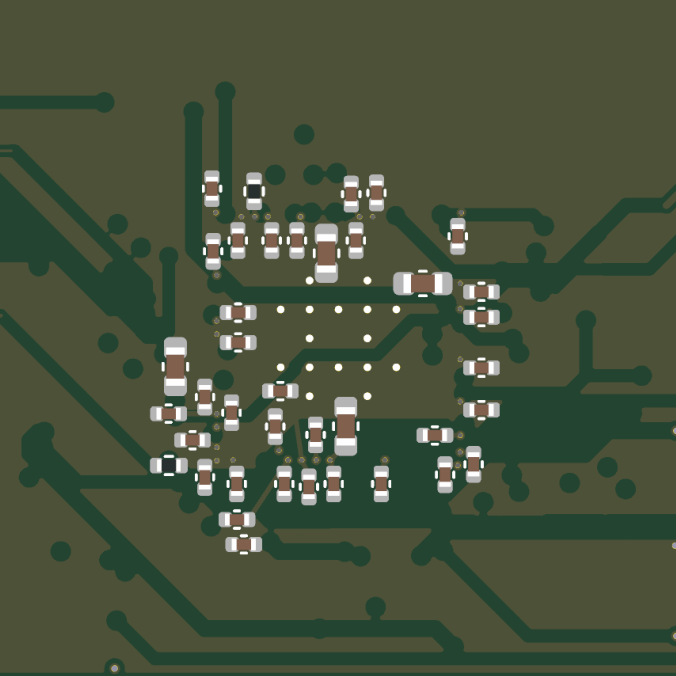
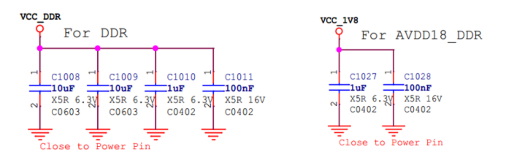
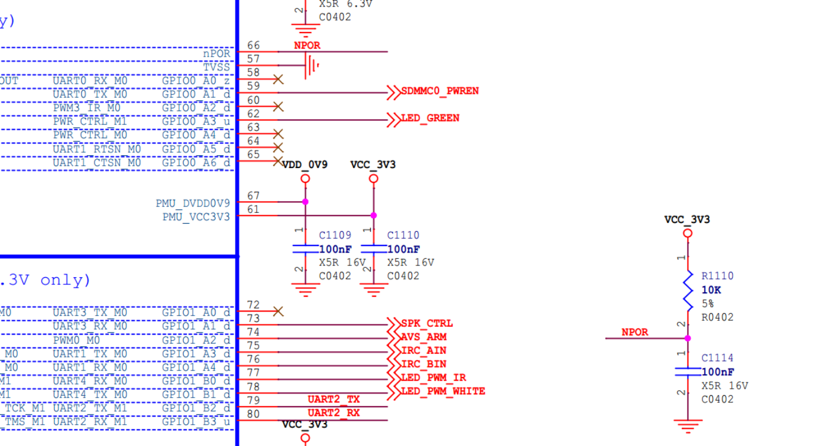
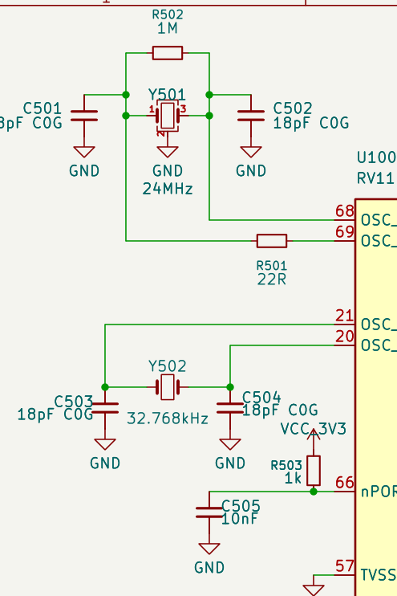

<title>RV1106 Placement Check</title>
<link rel="stylesheet" href="https://fonts.googleapis.com/css2?family=Space+Grotesk:wght@500;600;700&family=IBM+Plex+Sans:wght@400;500;600&family=IBM+Plex+Mono:wght@400;500&display=swap">
<style>
/* Layout: one reading column; a rule scorecard first, then side-by-side image pairs (reference | Klepon), then the numbers. Palette and type match the Klepon Rev 1 reports. */
:root{
  --bg:#f4f6f3; --paper:#ffffff; --fg:#17201b; --muted:#56635b; --line:#d5ddd6;
  --mask:#1d6a46; --mask-soft:#e3efe7; --copper:#b4692c; --copper-soft:#f6e9dc; --sheet:#ffffff;
  --ok:#1d6a46; --ok-soft:#e3efe7; --warn:#9a5b00; --warn-soft:#fbeed6; --note:#3d5a8a; --note-soft:#e5ebf5;
  --f-display:"Space Grotesk",ui-sans-serif,system-ui,sans-serif;
  --f-body:"IBM Plex Sans",ui-sans-serif,system-ui,sans-serif;
  --f-mono:"IBM Plex Mono",ui-monospace,SFMono-Regular,Menlo,monospace;
}
@media (prefers-color-scheme: dark){:root:not([data-theme="light"]){
  --bg:#101614; --paper:#17201c; --fg:#e4ebe6; --muted:#9aa89f; --line:#2b3732;
  --mask:#5fc08c; --mask-soft:#1c3328; --copper:#e09a5c; --copper-soft:#3a2a1c; --sheet:#f7f7f2;
  --ok:#5fc08c; --ok-soft:#1c3328; --warn:#e8b25a; --warn-soft:#3a2c14; --note:#9bb6e6; --note-soft:#1d2738; color-scheme:dark}}
:root[data-theme="dark"]{
  --bg:#101614; --paper:#17201c; --fg:#e4ebe6; --muted:#9aa89f; --line:#2b3732;
  --mask:#5fc08c; --mask-soft:#1c3328; --copper:#e09a5c; --copper-soft:#3a2a1c; --sheet:#f7f7f2;
  --ok:#5fc08c; --ok-soft:#1c3328; --warn:#e8b25a; --warn-soft:#3a2c14; --note:#9bb6e6; --note-soft:#1d2738; color-scheme:dark}
body{background:var(--bg);color:var(--fg);font-family:var(--f-body);font-size:15.5px;line-height:1.55}
.wrap{max-width:1160px;margin:0 auto;padding-left:max(16px,env(safe-area-inset-left,0px));padding-right:max(16px,env(safe-area-inset-right,0px));padding-block:0 4rem;display:grid;gap:2.8rem}
header{background:var(--paper);border-bottom:1px solid var(--line)}
header .wrap{padding-block:2rem 1.6rem;gap:.8rem}
.eyebrow{font-family:var(--f-mono);font-size:.78rem;letter-spacing:.08em;text-transform:uppercase;color:var(--copper)}
h1{font-family:var(--f-display);font-size:clamp(1.9rem,4.6vw,2.7rem);line-height:1.05;margin:0;letter-spacing:-.02em;text-wrap:balance}
h2{font-family:var(--f-display);font-size:1.4rem;margin:0;text-wrap:balance}
h3{font-family:var(--f-display);font-size:1.02rem;margin:0}
p{margin:0;max-width:72ch}
.lede{color:var(--muted);font-size:1.04rem}
.stats{display:flex;flex-wrap:wrap;gap:.5rem 1.6rem;font-family:var(--f-mono);font-size:.82rem;color:var(--muted)}
.stats b{color:var(--fg);font-weight:500}
nav.toc{position:sticky;top:env(safe-area-inset-top,0px);z-index:5;background:var(--bg);border-bottom:1px solid var(--line)}
body::before{content:"";position:fixed;inset:0 0 auto;height:env(safe-area-inset-top,0px);z-index:10;background:var(--bg)}
nav.toc .in{max-width:1160px;margin:0 auto;padding-block:.55rem;padding-left:max(16px,env(safe-area-inset-left,0px));padding-right:max(16px,env(safe-area-inset-right,0px));display:flex;flex-wrap:wrap;gap:.3rem 1.2rem;font-size:.86rem}
nav.toc a{color:var(--muted);text-decoration:none}
nav.toc a:hover,nav.toc a:focus-visible{color:var(--mask);text-decoration:underline}
section{display:grid;gap:1.1rem;min-width:0}
.shead{display:grid;gap:.3rem}
.shead p{color:var(--muted)}
.mut{color:var(--muted)}
code,.mono{font-family:var(--f-mono);font-size:.86em}
a{color:var(--mask)}
/* scorecard */
.rules{display:grid;grid-template-columns:repeat(auto-fill,minmax(min(100%,340px),1fr));gap:.8rem}
.rule{background:var(--paper);border:1px solid var(--line);border-radius:6px;padding:.85rem 1rem;display:grid;gap:.4rem;align-content:start}
.rule .top{display:flex;gap:.6rem;align-items:baseline;justify-content:space-between}
.rule .src{font-family:var(--f-mono);font-size:.74rem;color:var(--muted)}
.rule p{font-size:.92rem}
.pill{display:inline-block;font-family:var(--f-mono);font-size:.72rem;font-weight:500;border-radius:4px;padding:.05rem .45rem;white-space:nowrap}
.pill::before{margin-right:.3em}
.pill.ok{background:var(--ok-soft);color:var(--ok)} .pill.ok::before{content:"✓"}
.pill.warn{background:var(--warn-soft);color:var(--warn)} .pill.warn::before{content:"!"}
.pill.note{background:var(--note-soft);color:var(--note)} .pill.note::before{content:"~"}
/* figure pairs */
.pair{display:grid;grid-template-columns:repeat(auto-fit,minmax(min(100%,320px),1fr));gap:1rem}
figure{margin:0;background:var(--paper);border:1px solid var(--line);border-radius:6px;padding:.6rem;display:grid;gap:.45rem;align-content:start;min-width:0}
figure img{display:block;width:100%;height:auto;border-radius:3px;background:var(--sheet)}
figcaption{font-size:.84rem;color:var(--muted)}
figcaption b{color:var(--fg);font-weight:600}
.tag{font-family:var(--f-mono);font-size:.7rem;letter-spacing:.06em;text-transform:uppercase}
.tag.ref{color:var(--note)} .tag.us{color:var(--copper)}
/* board plot */
.plotbar{display:flex;flex-wrap:wrap;gap:.5rem 1.2rem;align-items:center;font-size:.86rem}
.seg{display:inline-flex;border:1px solid var(--line);border-radius:5px;overflow:hidden}
.seg button{font:inherit;font-size:.84rem;background:var(--paper);color:var(--fg);border:0;padding:.3rem .8rem;cursor:pointer}
.seg button[aria-pressed="true"]{background:var(--mask);color:var(--paper)}
.seg button:focus-visible,.chk input:focus-visible{outline:2px solid var(--mask);outline-offset:2px}
.chk{display:inline-flex;gap:.3rem;align-items:center;cursor:pointer}
.chk i{display:inline-block;width:.85em;height:.85em;border-radius:2px}
.plot{background:var(--sheet);border:1px solid var(--line);border-radius:6px;padding:.4rem;max-width:760px}
.plot svg{display:block;width:100%;height:auto}
.plot .L line{stroke-linecap:round;fill:none}
.plot .fcu line{stroke:#c83434} .plot .fcu .pad{fill:#c83434}
.plot .in2 line{stroke:#c87b2c}
.plot .bcu line{stroke:#3b6fc0} .plot .bcu .pad{fill:#3b6fc0}
.plot .v{fill:#6b7078} .plot .pth{fill:#8a8f96} .plot .vh{fill:#ffffff}
.plot .body{fill:none;stroke:#444;stroke-width:.07;stroke-dasharray:.35 .2}
.plot .out{fill:none;stroke-width:.05} .plot .bfab .out{stroke:#1f4f96} .plot .ffab .out{stroke:#8a2a2a}
.plot .ref{font:500 .42px var(--f-mono);text-anchor:middle;paint-order:stroke;stroke:#ffffff;stroke-width:.12}
.plot .rb{fill:#173d73} .plot .rf{fill:#7a1f1f}
.plot.hide-fcu .fcu,.plot.hide-fcu .ffab,.plot.hide-fcu .rf{opacity:.12}
.plot.hide-in2 .in2{display:none}
.plot.hide-bcu .bcu,.plot.hide-bcu .bfab,.plot.hide-bcu .rb{opacity:.12}
.plot.focus .L line,.plot.focus .pad,.plot.focus .v{opacity:.18}
.plot.focus .on{opacity:1!important;filter:drop-shadow(0 0 .12px #000)}
.plot.focus .v.on{fill:#0b7a8f}
/* cross-section */
.xs{background:var(--sheet);border:1px solid var(--line);border-radius:6px;padding:.5rem;overflow-x:auto}
.xs svg{display:block;width:100%;min-width:640px;height:auto}
.xs text{font:500 11px var(--f-mono);fill:#26302a}
.xs .t2{font:400 10px var(--f-body);fill:#56635b}
/* chart */
.chartbox{background:var(--paper);border:1px solid var(--line);border-radius:6px;padding:.8rem;overflow-x:auto;position:relative}
.chart{display:block;width:100%;min-width:520px;height:auto}
.chart .grid{stroke:var(--line);stroke-width:1}
.chart .tick,.chart .axis,.chart .rl,.chart .tlabel{font:400 11px var(--f-mono);fill:var(--muted)}
.chart .tick{text-anchor:middle} .chart .axis{text-anchor:middle} .chart .rl{text-anchor:end;fill:var(--fg)}
.chart .target{fill:var(--mask-soft)}
.chart .link{stroke:var(--muted);stroke-width:2;opacity:.5}
.chart .bef{fill:var(--paper);stroke:var(--copper);stroke-width:2.2}
.chart .aft{fill:var(--mask);stroke:var(--paper);stroke-width:2}
.chart .hit{fill:transparent}
.chart .row:hover .hit,.chart .row:focus .hit{fill:var(--mask-soft);opacity:.6}
.chart .row:focus{outline:none}
.legend{display:flex;flex-wrap:wrap;gap:.4rem 1.3rem;font-size:.84rem;color:var(--muted);align-items:center}
.legend svg{vertical-align:-2px;margin-right:.3em}
#tip{position:absolute;pointer-events:none;background:var(--fg);color:var(--bg);font-size:.8rem;line-height:1.4;padding:.4rem .55rem;border-radius:4px;max-width:300px;z-index:3}
/* table */
.tablewrap{overflow-x:auto;background:var(--paper);border:1px solid var(--line);border-radius:6px}
table{border-collapse:collapse;width:100%;font-size:.86rem;min-width:820px}
th,td{padding:.42rem .6rem;border-bottom:1px solid var(--line);text-align:left;vertical-align:top}
th{font-family:var(--f-mono);font-weight:500;font-size:.74rem;color:var(--muted);text-transform:uppercase;letter-spacing:.04em;position:sticky;top:0;background:var(--paper)}
td.num{font-family:var(--f-mono);font-variant-numeric:tabular-nums;text-align:right;white-space:nowrap}
tbody tr{cursor:pointer}
tbody tr:hover,tbody tr.sel{background:var(--mask-soft)}
tbody tr:focus-visible{outline:2px solid var(--mask);outline-offset:-2px}
/* ref gallery */
.refs{display:grid;gap:1rem}
.refrow{display:grid;grid-template-columns:minmax(0,1.25fr) minmax(0,1fr);gap:1rem;background:var(--paper);border:1px solid var(--line);border-radius:6px;padding:.8rem}
@media (max-width:720px){.refrow{grid-template-columns:1fr}}
.refrow img{display:block;width:100%;height:auto;background:#ffffff;border-radius:3px}
.refrow .us{display:grid;gap:.4rem;align-content:start;font-size:.9rem}
.refrow ul{margin:0;padding-left:1.1rem;display:grid;gap:.2rem}
.open{display:grid;gap:.7rem}
.rev td:nth-child(2){font-family:var(--f-mono);font-size:.8rem}
.open li{max-width:80ch}
footer{color:var(--muted);font-size:.84rem;display:grid;gap:.4rem}
@media (prefers-reduced-motion:reduce){*{transition:none!important}}
</style>

<header><div class="wrap">
  <div class="eyebrow">Klepon Rev 1 · T28 · U100 RV1106G3 · checked 2026-11-21</div>
  <h1>Does the RV1106 placement follow Rockchip’s guide?</h1>
  <p class="lede">Yes. Every supply pin has its own decoupling capacitor under the chip, in straight rows like Rockchip’s RV1106 EVB, and the RV1106 is now routed (T30): the USB pair as a matched, coupled pair with Rockchip’s spacing, and the microSD and HaLow SDIO buses within the length rule you set for their 50 MHz speed. The rest of the board is unrouted for now, on purpose.</p>
  <div class="stats"><span><b>{{NSUP}}</b> supply-pin groups, each with its own via and capacitor</span><span><b>{{NBOT}}</b> parts under U100</span><span>USB skew <b>{{USBSKEW}} mm</b> (limit 0.76)</span><span>RV1106 <b>0</b> open connections</span><span>DRC: <b>0</b> clearance, short or keepout errors, parity <b>0</b>, ERC <b>0</b></span></div>
</div></header>
<nav class="toc" aria-label="Sections"><div class="in">
  <a href="#t30">Routing (T30)</a><a href="#rules">Rule by rule</a><a href="#evb">Rockchip EVB vs Klepon</a><a href="#path">How a pin reaches its capacitor</a><a href="#ba">Before and after</a><a href="#pins">Every supply pin</a><a href="#figs">Reference figures</a><a href="#toolreview">Tool review</a><a href="#open">Still open</a>
</div></nav>
<main class="wrap">

<section id="t30">
  <div class="shead"><h2>Routing the RV1106 (T30)</h2><p>All other routing was cleared on your request, and the RV1106 was routed from scratch: its signal nets end to end, and its local power and ground. The USB pair needed a channel, so the RTC corner was re-placed first (your choice over relaxing the spacing).</p></div>
  <div class="tablewrap"><table class="rev">
    <thead><tr><th>Check</th><th>Result</th><th>Limit</th><th>Source</th></tr></thead>
    <tbody>
      <tr><td>RV1106 connections</td><td>0 open</td><td>0</td><td>kicad-cli DRC on the saved file</td></tr>
      <tr><td>Clearance, short, hole, keepout errors</td><td>0</td><td>0</td><td>DRC with the HDG rules in <code>klepon.kicad_dru</code></td></tr>
      <tr><td>Schematic parity / ERC</td><td>0 / 0</td><td>0</td><td>kicad-cli</td></tr>
      <tr><td>USB D+ / D− signal path, U100 → U1</td><td>{{USBDP}} / {{USBDM}} mm, skew {{USBSKEW}} mm</td><td>&lt; 0.76 mm (HDG p.48)</td><td><code>pathlen.py</code>; stubs to the charger excluded</td></tr>
      <tr><td>USB spacing to other signals</td><td>≥ 0.5 mm</td><td>&gt; 20 mil (HDG p.48)</td><td>DRC rule</td></tr>
      <tr><td>USB vias</td><td>D+ 2 (charger stub), D− 0</td><td>≤ 6 (HDG p.48)</td><td>board</td></tr>
      <tr><td>microSD spread</td><td>{{SDSPREAD}} mm</td><td>12 mm (H-14, relaxed)</td><td>KiCad lengths, vias included</td></tr>
      <tr><td>HaLow SDIO spread</td><td>{{SDIOSPREAD}} mm</td><td>12 mm (H-14, relaxed)</td><td>KiCad lengths, vias included</td></tr>
      <tr><td>Vias inside SMD pads (RV1106 nets)</td><td>0</td><td>0</td><td><code>t30_check.py</code></td></tr>
    </tbody>
  </table></div>
  <figure><figcaption><b>The routed RV1106</b>, pours hidden. Red is top copper, orange In2, blue bottom. The USB pair leaves U100’s left side through R508/R509 and runs down to the ESD chip U1; microSD goes down-right to J401, SDIO up to the HaLow module.</figcaption></figure>
  <div class="pair">
    <figure><figcaption><b>Before</b> · the corner west of U100. Y502, C503 and R506 sat right where the USB pair had to leave pins 26/27.</figcaption></figure>
    <figure><figcaption><b>After</b> · Y502 and its caps above the channel, about 5 mm from pins 20/21; the coupled USB pair runs down to U1, with its length-matching serpentine.</figcaption></figure>
  </div>
  <div class="pair">
    <figure><figcaption><b>USB before</b> · Freerouting’s two separate tracks, 44 and 32 mm, 11.9 mm apart.</figcaption></figure>
    <figure><figcaption><b>USB after</b> · 0.155 mm lines 0.130 mm apart (the USB90 class), 0.5 mm from other signals, matched to 0.00 mm on the signal path.</figcaption></figure>
  </div>
  <div class="tablewrap"><table class="rev">
    <thead><tr><th>Part</th><th>Value</th><th>From (mm)</th><th>To (mm)</th><th>Why</th></tr></thead>
    <tbody>{{T30MOVES}}</tbody>
  </table></div>
  <div class="panel"><h3>How it was done, and what to know</h3><ul>
    <li>USB pair: <code>usbpair.py</code> routes a centreline cleared for the whole pair plus 0.5 mm, offsets it into the two lines, and fans them into R508/R509 and U1; <code>tune.py</code> added 1.79 mm to D+ on its signal path only.</li>
    <li>Everything else: Freerouting (offline) on just the RV1106 nets with the USB pair locked and the USB class at 0.5 mm clearance, then <code>netroute.py</code> for the leftovers and <code>tune.py</code> for the microSD and SDIO serpentines.</li>
    <li>KiCad’s skew rule counts whole nets, including the short USB taps to the charger’s BC1.2 pins. The connector-side USB check therefore uses <code>pathlen.py</code> on the signal path; the rules file says so. The SoC side keeps KiCad’s rule.</li>
    <li>The microSD and SDIO limit is your relaxed 12 mm (requirement H-14): both buses run at 50 MHz or less, where 12 mm is ~0.08 ns of a 20 ns clock.</li>
  </ul></div>
</section>

<section id="rules">
  <div class="shead"><h2>Rule by rule</h2><p>Each card is one placement rule from the Rockchip RV1103G/RV1106G Hardware Design Guide V1.1 (HDG), with the page it comes from and what the Klepon board measures. Distances come from the saved board file (<code>hardware/kicad/klepon.kicad_pcb</code>), pad centre to pad centre.</p></div>
  <div class="rules">
    <div class="rule"><div class="top"><h3>Decoupling close to every power pin</h3><span class="pill ok">meets</span></div><div class="src">HDG §2.2.3.1–2.2.3.4, p.21–23</div><p>All {{NSUP}} supply-pin groups have a capacitor on the bottom, fed through one via in the ring between the pins and the exposed pad. Pin → via {{P2VMIN}}–{{P2VMAX}} mm, via → capacitor pad {{V2CMIN}}–{{V2CMAX}} mm, {{AMIN}}–{{AMAX}} mm in all (pad centre to pad centre). The guide only says “close”. The tidy rows cost about 0.3 mm against the scattered first pass (1.48–1.89 mm): the inner row can’t come nearer than about 2 mm from the pins without hitting the pin vias.</p></div>
    <div class="rule"><div class="top"><h3>VDD_0V9: 10 µF near and far</h3><span class="pill ok">meets</span></div><div class="src">HDG §2.2.3.2, p.22</div><p>VDD_0V9 comes in from L5 on the left of the board. C608 (10 µF) sits on the left edge of the chip, the near side, and C609 (10 µF) on the right edge, the far side. Every DVDD pin (10, 51, 54/55, 67, 71, 82, 103, 116) also has its own 100 nF or 1 µF.</p></div>
    <div class="rule"><div class="top"><h3>nPOR resistor and capacitor at pin 66</h3><span class="pill ok">meets</span></div><div class="src">HDG §2.1.2, p.15</div><p>C505 (10 nF) sits under pin 66, {{C505S}} mm away and linked through the pin’s via. R503 (1 kΩ pull-up) is in the next row spot, {{R503S}} mm away, and gets connected in routing. Before T28 they were 6.1 and 6.7 mm away. The values match Rockchip’s newer AI-IPC V13 reference (R1110, C1114, p.8). The HDG figure still shows 10 kΩ and 100 nF.</p></div>
    <div class="rule"><div class="top"><h3>RTC supply filter 100 Ω + 1 µF</h3><span class="pill ok">meets</span></div><div class="src">HDG §2.1.1, p.14</div><p>R603 is 100 Ω and C604 is 1 µF, the values the guide insists on. C604 sits {{C604}} mm from pin 19 (RTC_AVDD3V3).</p></div>
    <div class="rule"><div class="top"><h3>Exposed pad and GND pins</h3><span class="pill ok">meets</span></div><div class="src">HDG §3.2 item 10, p.41</div><p>The 7 × 7 mm exposed pad has 16 through vias (0.5/0.3 mm) into the In1 ground plane and the bottom fill. Ground pins 37 and 57 run straight into the exposed pad on the top layer.</p></div>
    <div class="rule"><div class="top"><h3>SoC near the board centre</h3><span class="pill ok">meets</span></div><div class="src">HDG §5.3, p.54</div><p>U100’s centre is {{SOCOFF}} mm from the centre of the 90 × 80 mm board, and well over 2 mm from every edge.</p></div>
    <div class="rule"><div class="top"><h3>4-layer stack-up</h3><span class="pill ok">meets</span></div><div class="src">HDG §3.1, p.39</div><p>4 layers (JLC04161H-3313). In1 is solid ground, so every bottom capacitor returns through the bottom fill and the exposed-pad vias.</p></div>
    <div class="rule"><div class="top"><h3>Series resistor near the transmitter</h3><span class="pill note">one moved</span></div><div class="src">HDG §3.2 item 9, p.41; Table 2-7, p.24</div><p>R508/R509 (USB) sit 3.3–3.5 mm from pins 26/27 along the copper. The 24 MHz XOUT 22 Ω (R501) is {{R501}} mm from pin 69. R511 (SD clock, 22 Ω) moved from 1.75 mm to {{R511}} mm from pin 15 so the microSD pins could fan out; at 50 MHz (SD 2.0) that stub is electrically short, but it no longer sits right at the pin.</p></div>
    <div class="rule"><div class="top"><h3>Decoupling values per rail</h3><span class="pill ok">meets</span></div><div class="src">HDG Fig 2-8, 2-10, 2-12, p.22–23</div><p>VDD_ARM, VDD_0V9 and VCC_DDR have at least the capacitors Rockchip shows. Pin 53 (DDR_PLL_AVDD1V8) now has 1 µF + 100 nF as Fig 2-12 asks: C628 changed from 100 nF to 1 µF (LCSC C52923, the part C627 already uses, so no new BOM line). ERC is clean.</p></div>
    <div class="rule"><div class="top"><h3>24 MHz crystal: a via at each GND pin</h3><span class="pill ok">meets</span></div><div class="src">HDG §2.1.1, p.14; §3.2 item 10, p.41</div><p>Y501 is the 4-pin type the guide asks for. Each GND pad now has its own ground via {{Y501GV}} mm from the pad centre, just outside the crystal outline so it stays clear of the keepout. Before, the nearest vias were 1.65 and 4.35 mm away.</p></div>
    <div class="rule"><div class="top"><h3>Nothing routed under the crystals</h3><span class="pill ok">meets</span></div><div class="src">HDG §3.2 item 11, p.41</div><p>Keepouts (no tracks, no vias) under Y501 and Y502 on In2 and B.Cu and between each crystal’s pads on F.Cu; Y502’s moved with the crystal. No track crosses Y501. One track, SARADC_IN0 (the static recovery-key line), passes inside Y502’s courtyard margin just below its left pad, not under the crystal body.</p></div>
    <div class="rule"><div class="top"><h3>No vias inside SMD pads</h3><span class="pill ok">meets</span></div><div class="src">assembly, not an HDG rule</div><p>No via sits inside an SMD pad on any RV1106 signal or rail. Freerouting ran with via-at-SMD off, and my own routers refuse a via inside any pad, own net included.</p></div>
    <div class="rule"><div class="top"><h3>DDR ZQ and second DDR bulk</h3><span class="pill ok">routed</span></div><div class="src">HDG §2.2.3.3, p.23</div><p>R604 (240 Ω ZQ, pin 52) is under the chip, {{R604S}} mm from its pin, and routed. C622, the second VCC_DDR 10 µF, is in the bulk row next to C621.</p></div>
  </div>
</section>

<section id="evb">
  <div class="shead"><h2>Rockchip’s EVB next to Klepon</h2><p>The RV1106 EVB1 user guide shows the back of Rockchip’s own board (Fig 1-4, p.10). The decoupling capacitors sit in a tight cluster under the SoC, between the four heatsink holes, and Klepon now does the same. Both bottom views are seen from underneath, so left and right are mirrored compared with the top.</p></div>
  <div class="pair">
    <figure><figcaption><span class="tag ref">Reference</span><br><b>Rockchip RV1106G EVB, back side</b>. Cropped from Fig 1-4, <code>Rockchip-RV1106-EVB1-User-Guide-EN-V1-0-20221028.pdf</code> p.10. Photo, about 1:1 with the SoC area.</figcaption></figure>
    <figure><figcaption><span class="tag us">Klepon</span><br><b>Bottom, 3D render</b> (kicad-cli, 26 × 26 mm around U100). The 16 white dots are the exposed-pad vias. Every capacitor around them belongs to one supply pin.</figcaption></figure>
    <figure><figcaption><span class="tag us">Klepon</span><br><b>Top, 3D render</b>, same window. The ring of top-side capacitors around U100 is gone; what’s left are the crystals, the series resistors and parts of other blocks.</figcaption></figure>
  </div>
  <div class="pair">
    <figure><figcaption><span class="tag ref">Reference</span> Whole EVB back side, Fig 1-4 p.10. The SoC cluster is at the centre.</figcaption></figure>
    <figure><figcaption><span class="tag us">Klepon</span> Whole board, bottom (3D, from underneath). The cluster sits under U100, near the centre.</figcaption></figure>
  </div>
</section>

<section id="path">
  <div class="shead"><h2>How each supply pin reaches its capacitor</h2><p>The pins are 0.35 mm apart, so there’s no room for a capacitor beside each one on top. Instead, each supply pin gets a short stub inward to its own via, placed in the 2.15 mm ring between the pin row and the exposed pad. The capacitor sits right under that via on the bottom. Its ground pad goes to the bottom ground fill, which the 16 exposed-pad vias tie to the chip’s ground and the In1 plane, so the loop stays a few millimetres long.</p></div>
  <div class="xs" role="img" aria-label="Cross-section through the board at one RV1106 supply pin">
  <svg viewBox="0 0 780 290">
    <rect x="0" y="0" width="780" height="290" fill="#ffffff"/>
    <!-- board layers -->
    <rect x="20" y="118" width="740" height="92" fill="#e8eadf"/>
    <rect x="20" y="114" width="740" height="4" fill="#c9cbc0"/>
    <rect x="20" y="142" width="300" height="4" fill="#9aa29b"/><rect x="352" y="142" width="408" height="4" fill="#9aa29b"/>
    <rect x="20" y="182" width="240" height="4" fill="#d2a272"/>
    <rect x="20" y="210" width="210" height="4" fill="#6f8fc0"/><rect x="560" y="210" width="200" height="4" fill="#6f8fc0"/>
    <text x="766" y="120" text-anchor="end" class="t2">F.Cu</text><text x="766" y="140" text-anchor="end" class="t2">In1 · solid GND</text><text x="766" y="180" text-anchor="end" class="t2">In2</text><text x="766" y="226" text-anchor="end" class="t2">B.Cu · GND fill</text>
    <!-- chip -->
    <rect x="40" y="62" width="440" height="48" rx="3" fill="#2a2d31"/>
    <text x="150" y="91" fill="#e9ece6" style="font:600 13px var(--f-mono);fill:#e9ece6">U100 RV1106G3</text>
    <rect x="60" y="110" width="210" height="4" fill="#c83434"/><text x="165" y="104" text-anchor="middle" style="font:500 10px var(--f-mono);fill:#c9ccd0">exposed pad · GND</text>
    <rect x="430" y="110" width="44" height="4" fill="#c83434"/>
    <!-- EP thermal vias -->
    <rect x="96" y="114" width="10" height="96" fill="#8a8f96"/><rect x="146" y="114" width="10" height="96" fill="#8a8f96"/><rect x="196" y="114" width="10" height="96" fill="#8a8f96"/>
    <!-- stub + supply via -->
    <rect x="336" y="110" width="98" height="4" fill="#c83434"/>
    <rect x="326" y="110" width="20" height="104" fill="#0b7a8f"/><rect x="332" y="114" width="8" height="96" fill="#ffffff"/>
    <!-- bottom link + capacitor -->
    <rect x="300" y="214" width="46" height="4" fill="#3b6fc0"/>
    <rect x="240" y="214" width="16" height="4" fill="#6f8fc0"/>
    <rect x="236" y="218" width="78" height="24" rx="2" fill="#b98b5b"/><rect x="236" y="218" width="18" height="24" fill="#c9ccd0"/><rect x="296" y="218" width="18" height="24" fill="#c9ccd0"/>
    <!-- labels -->
    <line x1="452" y1="110" x2="520" y2="44" stroke="#56635b"/><text x="524" y="40">supply pin pad (0.75 × 0.18 mm)</text>
    <line x1="385" y1="111" x2="430" y2="66" stroke="#56635b" opacity="0"/>
    <text x="352" y="104" class="t2">0.15 mm stub, F.Cu</text>
    <line x1="346" y1="160" x2="420" y2="160" stroke="#56635b"/><text x="424" y="164">via 0.4 / 0.2 mm, in the ring</text>
    <text x="424" y="178" class="t2">pin → via {{P2VMIN}}–{{P2VMAX}} mm</text>
    <line x1="322" y1="146" x2="300" y2="160" stroke="#56635b" opacity="0"/>
    <text x="304" y="137" class="t2">clearance cut in In1</text>
    <line x1="275" y1="242" x2="275" y2="262" stroke="#56635b"/><text x="275" y="276" text-anchor="middle">capacitor on B.Cu (0402)</text>
    <text x="330" y="236" class="t2">via → pad {{V2CMIN}}–{{V2CMAX}} mm</text>
    <line x1="151" y1="212" x2="151" y2="252" stroke="#56635b"/><text x="60" y="266">16 exposed-pad vias tie chip GND, In1 and the bottom fill</text>
    <path d="M 245 230 C 200 250, 170 240, 151 214" fill="none" stroke="#1d6a46" stroke-width="2" stroke-dasharray="4 3"/>
    <text x="22" y="28" style="font:600 12px var(--f-body);fill:#26302a">Section through one supply pin (schematic, not to scale)</text>
    <text x="22" y="46" class="t2">Green dashed line: the ground return from the capacitor back to the chip</text>
  </svg></div>
</section>

<section id="ba">
  <div class="shead"><h2>Before and after</h2><p>Before T28, every decoupling capacitor sat on top, outside the pin ring, 1.5–6.7 mm from its pin. T28 moved them under the chip; T29 lined them up. The plot below is drawn from the board file: red is top copper, orange In2, blue bottom. Pick a row in the pin table further down to light up its net here.</p></div>
  <div class="pair">
    <figure><figcaption><b>Before</b> · top. Capacitors spread 1.5–6.7 mm outside the pin ring.</figcaption></figure>
    <figure><figcaption><b>After (T30)</b> · top, routed. The pin ring is clear; supply stubs run inward to their vias, signals fan out straight.</figcaption></figure>
    <figure><figcaption><b>Before</b> · bottom (from underneath). Nothing under the chip but its vias.</figcaption></figure>
    <figure><figcaption><b>First pass (T28)</b> · bottom. Each cap at the first legal spot: short, but scattered.</figcaption></figure>
    <figure><figcaption><b>After (T29)</b> · bottom, from underneath. Straight rows, every part turned the same way per side, ground pads toward the centre vias, 10 µF bulks outside.</figcaption></figure>
  </div>
  <div class="plotbar">
    <span class="seg" role="group" aria-label="Board version"><button type="button" id="v-after" aria-pressed="true">After</button><button type="button" id="v-before" aria-pressed="false">Before</button></span>
    <label class="chk"><input type="checkbox" id="l-fcu" checked><i style="background:#c83434"></i>F.Cu top</label>
    <label class="chk"><input type="checkbox" id="l-in2" checked><i style="background:#c87b2c"></i>In2</label>
    <label class="chk"><input type="checkbox" id="l-bcu" checked><i style="background:#3b6fc0"></i>B.Cu bottom</label>
    <span class="mut" id="focusnote">Seen from the top, through the board; 28 × 28 mm window, U100 at the centre.</span>
  </div>
  <div class="plot" id="plot-after">{{AFTER}}</div>
  <div class="plot" id="plot-before" hidden>{{BEFORE}}</div>
</section>

<section id="pins">
  <div class="shead"><h2>Every supply pin</h2><p>Distance from each supply pin to its first capacitor. Before: a straight line on the top side; the routed copper was longer. After: pin → via → capacitor pad, which is close to the real copper because both legs are straight tracks. The shaded band is our 1.5 mm target. Hover or tab through the rows for details. The shaded 1.5 mm band was the T28 target; the tidy rows trade about 0.3 mm of it for an orderly layout.</p></div>
  <div class="legend"><span><svg width="14" height="14" aria-hidden="true"><circle cx="7" cy="7" r="5" fill="none" stroke="var(--copper)" stroke-width="2.2"/></svg>Before T28, top side</span><span><svg width="14" height="14" aria-hidden="true"><circle cx="7" cy="7" r="5" fill="var(--mask)"/></svg>After, bottom side through a via</span></div>
  <div class="chartbox" id="chartbox"><h3 id="chart-title" style="margin-bottom:.4rem">Pin to capacitor, before and after (mm)</h3>{{CHART}}<div id="tip" hidden></div></div>
  <div class="tablewrap"><table>
    <thead><tr><th>Pin</th><th>Function</th><th>Net</th><th>Parts</th><th>Before mm</th><th>Pin→via mm</th><th>After mm</th><th></th></tr></thead>
    <tbody id="pintable">{{TABLE}}</tbody>
  </table></div>
  <p class="mut">Pin 52 (DRAM_ZQ) has no via: R604 stays on top. Parts marked “top” are on the top side.</p>
</section>

<section id="figs">
  <div class="shead"><h2>The reference figures</h2><p>The HDG figures each rule comes from, next to what Klepon has. Figures are cropped from <code>resources/resource/Rockchip-RV1103G-RV1106G-Hardware-Design-Guide-en-V1-1-20221221.pdf</code>.</p></div>
  <div class="refs">
    <div class="refrow"><div class="us"><span class="tag ref">HDG Fig 2-10, p.22 · VDD_0V9</span><p>2 × 10 µF, 2 × 1 µF, 5 × 100 nF, “close to power pin”. Text: 10 µF near and far from the supply, 100 nF on every pin.</p><span class="tag us">Klepon</span><ul><li>C608, C609 10 µF: left (near L5) and right (far)</li><li>C610, C611 1 µF on pins 10 and 51</li><li>9 × 100 nF on pins 54/55, 67, 71, 82, 103, 116</li></ul></div></div>
    <div class="refrow"><div class="us"><span class="tag ref">HDG Fig 2-8, p.22 · VDD_ARM</span><p>10 µF + 1 µF + 100 nF (a second 100 nF is DNP).</p><span class="tag us">Klepon</span><ul><li>C606 1 µF and C607 100 nF on pin 115, both under the pin</li><li>C605 10 µF on the bottom next to them</li></ul></div></div>
    <div class="refrow"><div class="us"><span class="tag ref">HDG Fig 2-12, p.23 · DDR</span><p>VCC_DDR: 2 × 10 µF, 1 µF, 100 nF. AVDD18_DDR: 1 µF + 100 nF.</p><span class="tag us">Klepon</span><ul><li>C623 1 µF on pins 49/50, C624 100 nF on pin 56, C621 10 µF under the chip</li><li>C622 10 µF stays on top (open)</li><li>Pin 53: C626 + C628, both 100 nF (open: no 1 µF)</li></ul></div></div>
    <div class="refrow"><div class="us"><span class="tag ref">HDG Fig 2-3, p.15 · nPOR</span><p>Pin 66 pulled up by R1110, filtered by C1114. “Place the resistor and capacitor close to the RV1106G.”</p><span class="tag us">Klepon</span><ul><li>R503 1 kΩ and C505 10 nF, both under pin 66 ({{R503S}} and {{C505S}} mm straight line)</li><li>Values from the AI-IPC V13 reference, p.8</li></ul></div></div>
    <div class="refrow"><div class="us"><span class="tag ref">HDG Fig 2-1, p.14 · 24 MHz crystal</span><p>4-pin crystal with both GND pins grounded, 22 Ω series on XOUT, 1 MΩ across, 2 × 18 pF C0G.</p><span class="tag us">Klepon</span><ul><li>Y501 4-pin, R501 22 Ω, R502 1 MΩ, C501/C502 18 pF C0G: same circuit</li><li>GND pads {{Y501GV}} mm from the nearest via (partly)</li><li>{{Y501UNDER}} nets routed underneath (open)</li></ul></div></div>
    <div class="refrow"><div class="us"><span class="tag ref">HDG Fig 3-6, p.41 · GND vias</span><p>“Each GND pad at IC … recommend place a GND PTH via.”</p><span class="tag us">Klepon</span><ul><li>U100 exposed pad: 16 vias</li><li>Pins 37 and 57 tied into the exposed pad</li><li>Every bottom capacitor’s GND pad lands in the bottom fill, which the exposed-pad vias tie to In1</li></ul></div></div>
  </div>
</section>


<section id="toolreview">
  <div class="shead"><h2>Second opinion: third-party KiCad checker</h2><p>The whole project was run through a third-party KiCad checker (ERC, DRC, placement and transfer gates), read-only, plus my own check of each finding against the board. The project files were byte-identical before and after the checks.</p></div>
  <div class="tablewrap"><table class="rev">
    <thead><tr><th>Check</th><th>Tool says</th><th>Verified</th><th>What it means</th></tr></thead>
    <tbody>
      <tr><td>Schematic ERC</td><td>0 violations</td><td><span class="pill ok">real</span></td><td>Clean, including the C628 change. No undriven power pins (<code>sch_check_power_flags</code>).</td></tr>
      <tr><td>Schematic → board transfer</td><td>929 / 929 pad nets, 100 %</td><td><span class="pill ok">real</span></td><td>Every named pad net on the board matches the schematic.</td></tr>
      <tr><td>Footprints vs schematic</td><td>FAIL: MH1–MH4 not in schematic</td><td><span class="pill note">expected</span></td><td>The four mounting holes are board-only parts by design. KiCad’s own parity check is 0.</td></tr>
      <tr><td>PCB gate: stored zone fill</td><td>BLOCKED: fill stale, 305 violations, 128 unconnected</td><td><span class="pill warn">real, fixed</span></td><td>My T29 script saved the board without refilling the zones. My DRC refilled before checking, so it missed this. Gerbers would have used the old fills. <b>Fixed in this review:</b> refilled and saved with the KiCad scripting server, and the saved board now checks at 0 clearance, short or hole errors and 117 unconnected (the cleared area).</td></tr>
      <tr><td>Placement gate: overlaps</td><td>FAIL: C6xx/U100, C502/C615, C605/R19, C608/R511 …</td><td><span class="pill note">false positive</span></td><td>Every pair is a bottom capacitor under a top part. The gate ignores board side. KiCad DRC: 0 courtyard issues.</td></tr>
      <tr><td>Placement gate: edges</td><td>FAIL: J2, J401 outside; J20, J901 far from edge</td><td><span class="pill note">by design</span></td><td>J1, J2 and J401 are the edge connectors project rules asks for, overhanging on purpose. J20 and J901 are U.FL sockets for internal pigtails.</td></tr>
      <tr><td>Placement gate: U100 decoupling</td><td>WARN: nearest cap 3.57 mm (centre proxy, limit 6 mm)</td><td><span class="pill ok">passes</span></td><td>It measures footprint centres only. The pad-level numbers on this page are the better measure.</td></tr>
      <tr><td>VDD_0V9 PDN estimate</td><td>PASS, 27.7 mV drop at 1.6 A</td><td><span class="pill note">estimate</span></td><td>Assumes an equivalent 1 mm × 35 mm copper path from L5 and the HDG’s 1.6 A peak. That’s 3.2 % of 0.88 V, inside the ±5 % budget but using most of it. The real path is the In2 VDD_0V9 pour, so the drop should be lower. Re-run once the area is routed.</td></tr>
      <tr><td>JLCPCB DFM</td><td>FAIL (DRC count, unconnected)</td><td><span class="pill note">expected</span></td><td>Fails on the unrouted area and on the stale fill above. Annular ring, copper-to-edge and silk sizes need a manual look at release.</td></tr>
      <tr><td>Schematic readability score</td><td>SoC Power 0/100, SoC 30/100</td><td><span class="pill warn">partly real</span></td><td>Most hits are false: they come from the size of the multi-unit RV1106 symbol, and the wires start at the pin tips. The real ones are below.</td></tr>
    </tbody>
  </table></div>
  <div class="pair">
    <figure><figcaption><b>SoC sheet, crystal and nPOR corner.</b> Text touches wires and symbols, against the project rules drawing rules: C503 “18pF C0G” over its capacitor; C504’s reference on the X2 junction; Y501’s pin numbers 1 and 3 on the junctions; “VCC_3V3” into R503; C505 against the nPOR wire. Netlist unaffected.</figcaption></figure>
    <figure><figcaption><b>SoC Power sheet, decoupling rows.</b> The first capacitor of each row (C605, C608, C621, C625, C629) prints its reference and value twice in the exported PDF, so the text looks bold. The symbol exists once and its fields match the others; cause not found, check in KiCad’s editor. Netlist unaffected.</figcaption></figure>
  </div>
  <p><b>Manufacturing readiness</b> (checker scale): <span class="pill warn">blocked</span>. The SoC area is unrouted on purpose ({{UNCON}} open connections). Nothing on this page means the board is ready to order; that needs routing, a clean DRC and DFM, the fabrication-output workflow and your review.</p>
</section>

<section id="open">
  <div class="shead"><h2>Still open</h2><p>The placement and RV1106 routing items are done. What’s left is the rest of the board and a few small notes.</p></div>
  <ol class="open">
    <li><b>Route the rest of the board</b> ({{UNCON}} open connections, cleared on purpose in T30): power tree, charger, radios’ power, connectors.</li>
    <li><b>SARADC_IN0 near Y502</b>: it passes inside the crystal’s courtyard margin. It is a static line, so low risk; move it when the area is next touched.</li>
    <li><b>R511 at 6.3 mm from its pin</b>: fine at 50 MHz; bring it closer if the microSD ever runs a 1.8 V UHS mode.</li>
    <li><b>Tidy the U100 schematic text</b>: the crystal and nPOR corner of the SoC sheet, and the doubled labels on the SoC Power sheet (see the tool review). Cosmetic only; ERC is clean.</li>
    <li><b>Two old dangling vias</b> on ESP32-C5 nets and the silkscreen near the board edge: for the final clean-up pass.</li>
  </ol>
</section>

<footer>
  <p>Measured 2026-11-22 from <code>hardware/kicad/klepon.kicad_pcb</code> after T30 (after) and the backup taken before T28 (before), with <code>measure.py</code>, <code>t30_check.py</code>, <code>pathlen.py</code> and <code>kicad_lengths.py</code>. Copper views are kicad-cli SVG exports with the pours hidden; 3D views are kicad-cli renders. Board state: RV1106 fully routed, DRC 0 clearance, short, hole, keepout or skew errors, schematic parity 0, ERC 0; {{UNCON}} connections open in the rest of the board, which is unrouted on purpose.</p>
  <p>Sources: Rockchip RV1103G/RV1106G Hardware Design Guide V1.1 (2022-12-21); Rockchip RV1106 EVB1 User Guide V1.0 (2022-10-28); Rockchip RV1106G-AI-IPC V13 reference schematic (2023-11-10), all in <code>resources/resource/</code>.</p>
</footer>
</main>
<script>
(function(){
  var pa=document.getElementById('plot-after'), pb=document.getElementById('plot-before');
  var ba=document.getElementById('v-after'), bb=document.getElementById('v-before');
  function show(after){ pa.hidden=!after; pb.hidden=after; ba.setAttribute('aria-pressed',after); bb.setAttribute('aria-pressed',!after); }
  ba.addEventListener('click',function(){show(true)}); bb.addEventListener('click',function(){show(false)});
  ['fcu','in2','bcu'].forEach(function(l){ var c=document.getElementById('l-'+l);
    c.addEventListener('change',function(){ [pa,pb].forEach(function(p){ p.classList.toggle('hide-'+l,!c.checked); }); }); });
  var rows=document.querySelectorAll('#pintable tr'), note=document.getElementById('focusnote'), base=note.textContent;
  function focusNet(net,row){
    [pa,pb].forEach(function(p){
      p.querySelectorAll('.on').forEach(function(e){e.classList.remove('on')});
      if(!net){p.classList.remove('focus');return;}
      p.classList.add('focus');
      p.querySelectorAll('[data-net]').forEach(function(e){ if(e.getAttribute('data-net')===net) e.classList.add('on'); });
    });
    rows.forEach(function(r){r.classList.toggle('sel',r===row)});
    note.textContent = net ? 'Showing net '+net.replace(/\{slash\}/g,'/')+'. Pick the row again to clear.' : base;
  }
  rows.forEach(function(r){ r.tabIndex=0;
    function act(){ var on=r.classList.contains('sel'); focusNet(on?null:r.getAttribute('data-net'), on?null:r); if(!on) document.getElementById('ba').scrollIntoView({behavior:'smooth',block:'start'}); }
    r.addEventListener('click',act); r.addEventListener('keydown',function(e){ if(e.key==='Enter'||e.key===' '){e.preventDefault();act();} }); });
  var box=document.getElementById('chartbox'), tip=document.getElementById('tip');
  box.querySelectorAll('.row').forEach(function(g){
    function on(){ var br=box.getBoundingClientRect(), r=g.getBoundingClientRect(); tip.textContent=g.getAttribute('data-tip'); tip.hidden=false;
      var x=Math.min(r.left-br.left+box.scrollLeft+170, box.clientWidth-310); tip.style.left=Math.max(8,x)+'px'; tip.style.top=(r.bottom-br.top+4)+'px'; }
    function off(){ tip.hidden=true; }
    g.addEventListener('mouseenter',on); g.addEventListener('mouseleave',off); g.addEventListener('focus',on); g.addEventListener('blur',off);
  });
})();
</script>
